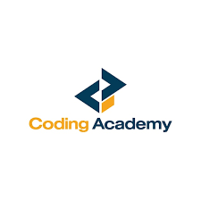

Content Creator
Company: EdgeTech BD (Part-time)
Duration: Aug 2023 - Nov 2025 (2 yrs 4 mos)
Location: Dhaka, Bangladesh (Remote)
Produced high-quality educational video content and software tutorials. I edited visual assets for
social media and collaborated with marketing teams to design promotional materials that increased
audience engagement.

Junior Research Intern
Company: Global Data Analytics Co.
Duration: Jan 2023 - July 2023
Location: Remote
Assisted in extracting and cleaning datasets for internal ML models. I conducted trend research on AI
developments and maintained technical documentation to support research and development workflows.

Technical Tutor
Company: Local Coding Academy
Duration: 2021 - 2022
Location: Hybrid
Provided real-time technical troubleshooting for students and moderated a large learning community on
Discord. I also authored step-by-step guides to resolve common software configuration issues.